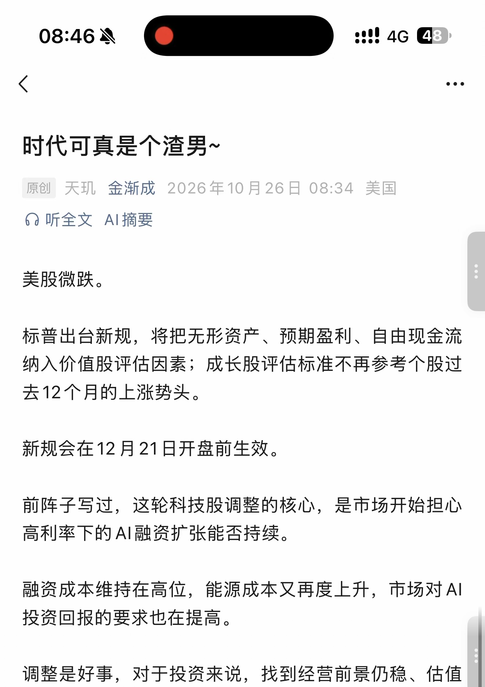
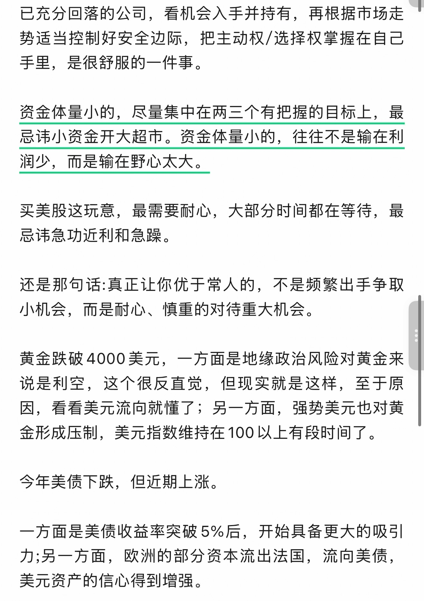
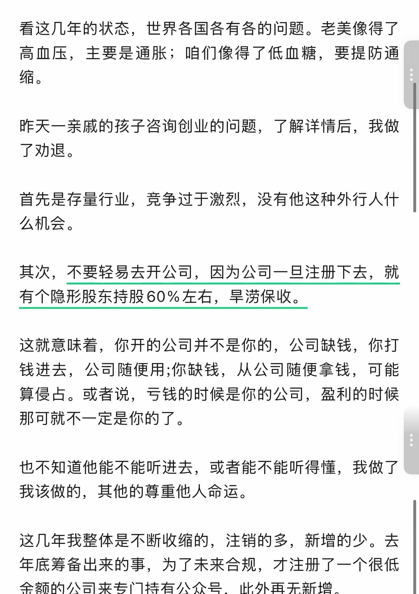
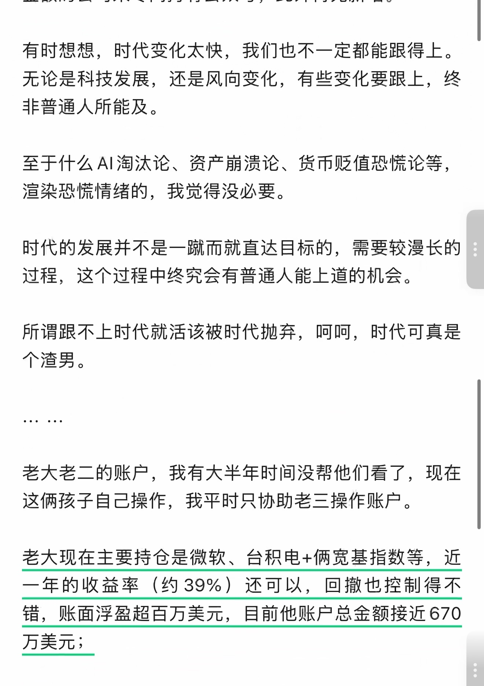
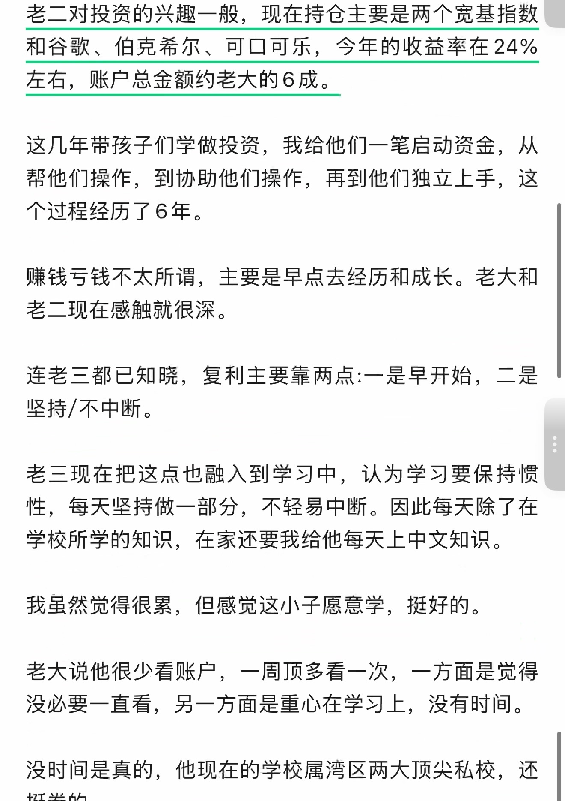
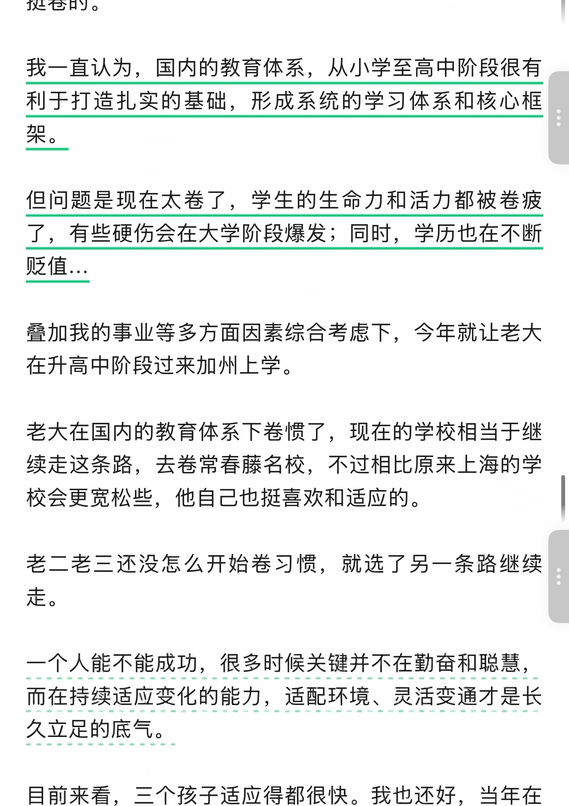
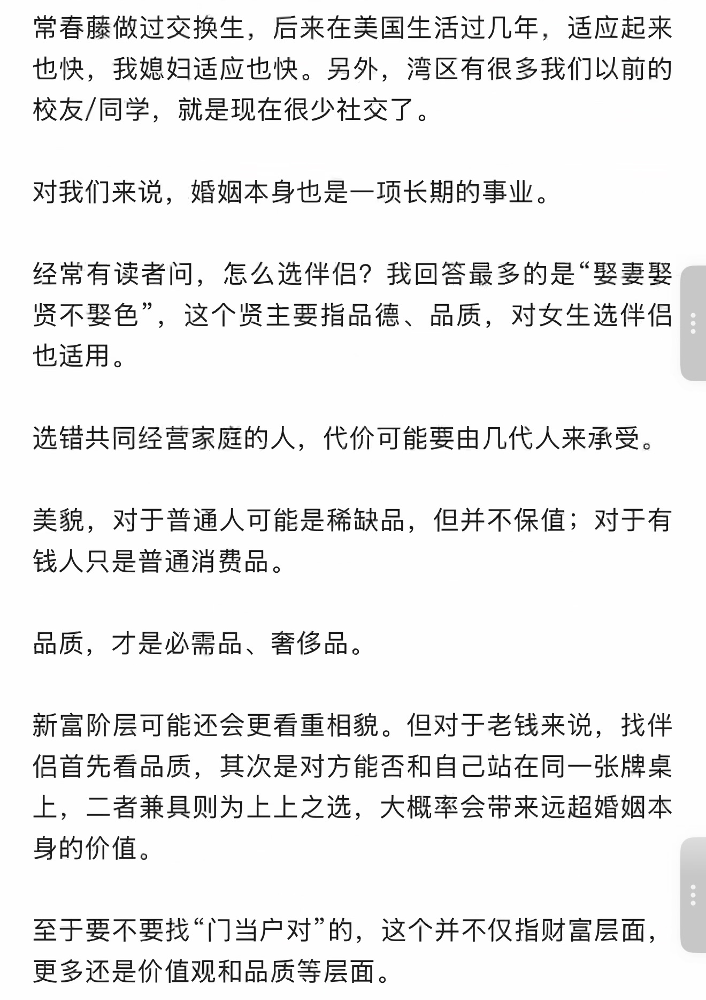
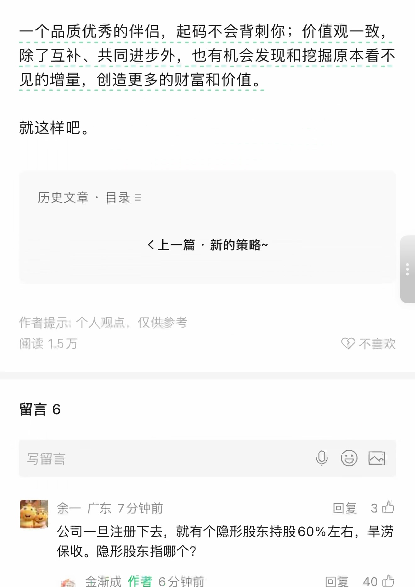
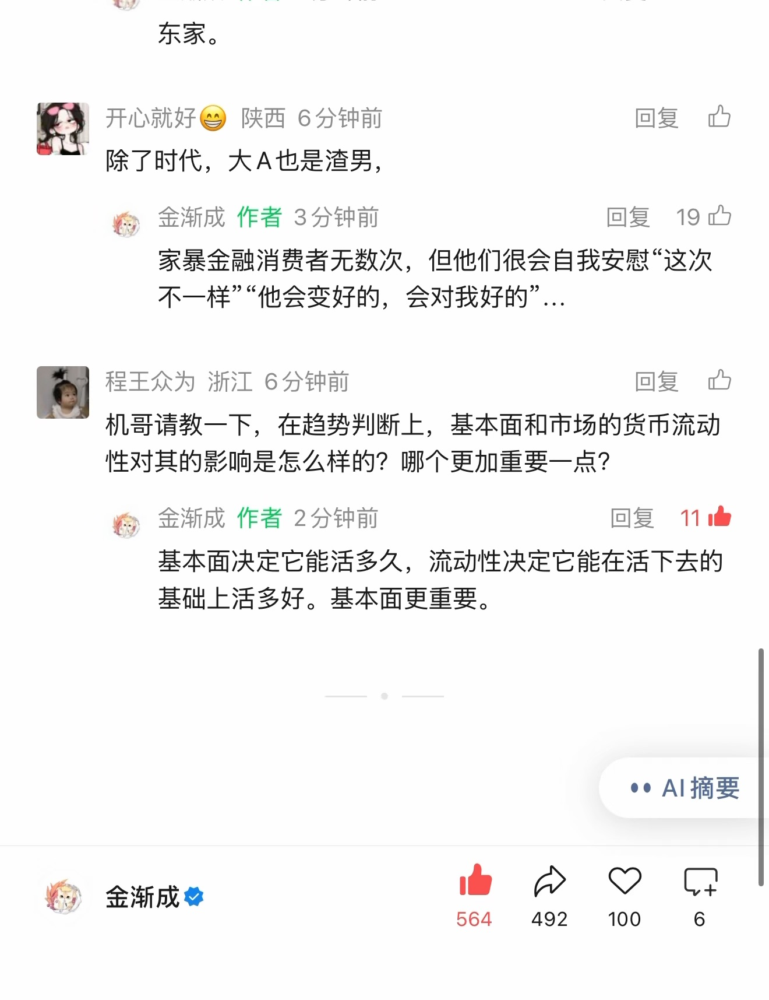

时代可真是个渣男~
识别文字连续阅读 · 原图附后
原始 PDF 不公开，本页展示捕获页面的截图。 识别文字按页序连续显示，全部原始截图附在文末，便于对照。文字由视觉转录整理，尚未经人工逐字核对，可能存在错字、漏字、漏行、顺序或断行错误。留言与作者回复仅限截图中可见的内容，不代表完整线上留言，也未据此推断留言总数。
OCR 识别提示（待核对）
- OCR/视觉转录文字，尚未逐字校对；可能错字、漏字、漏行，数字、姓名、表情、标点及断行也可能有误，请以截图为准。
- 这里只保留 PDF 已截到的正文、留言和作者回复；截图以外的留言不在此存档中。
- 未从截图推断留言总数或回复关系；手机界面文字也可能混入 OCR。
- 方括号中的表情说明是转录注释，原始表情请对照截图。
- 页面边界仅露出少量字形的重复行归到文字主体可见的相邻页；不推断缺失内容。
识别文字
文字按截图页序整理；页边重复行仅保留一次，原始 PDF 不公开。方括号中的表情说明为转录注释。
第 1 页对照原图
时代可真是个渣男~
原创 天玑 金渐成 2026年10月26日 08:34 美国
美股微跌。
标普出台新规，将把无形资产、预期盈利、自由现金流纳入价值股评估因素；成长股评估标准不再参考个股过去12个月的上涨势头。
新规会在12月21日开盘前生效。
前阵子写过，这轮科技股调整的核心，是市场开始担心高利率下的AI融资扩张能否持续。
融资成本维持在高位，能源成本又再度上升，市场对AI投资回报的要求也在提高。
调整是好事，对于投资来说，找到经营前景仍稳、估值
第 2 页对照原图
已充分回落的公司，看机会入手并持有，再根据市场走势适当控制好安全边际，把主动权/选择权掌握在自己手里，是很舒服的一件事。
资金体量小的，尽量集中在两三个有把握的目标上，最忌讳小资金开大超市。资金体量小的，往往不是输在利润少，而是输在野心太大。
买美股这玩意，最需要耐心，大部分时间都在等待，最忌讳急功近利和急躁。
还是那句话:真正让你优于常人的，不是频繁出手争取小机会，而是耐心、慎重的对待重大机会。
黄金跌破4000美元，一方面是地缘政治风险对黄金来说是利空，这个很反直觉，但现实就是这样，至于原因，看看美元流向就懂了；另一方面，强势美元也对黄金形成压制，美元指数维持在100以上有段时间了。
今年美债下跌，但近期上涨。
一方面是美债收益率突破5%后，开始具备更大的吸引力;另一方面，欧洲的部分资本流出法国，流向美债，美元资产的信心得到增强。
第 3 页对照原图
看这几年的状态，世界各国各有各的问题。老美像得了高血压，主要是通胀；咱们像得了低血糖，要提防通缩。
昨天一亲戚的孩子咨询创业的问题，了解详情后，我做了劝退。
首先是存量行业，竞争过于激烈，没有他这种外行人什么机会。
其次，不要轻易去开公司，因为公司一旦注册下去，就有个隐形股东持股60%左右，旱涝保收。
这就意味着，你开的公司并不是你的，公司缺钱，你打钱进去，公司随便用;你缺钱，从公司随便拿钱，可能算侵占。或者说，亏钱的时候是你的公司，盈利的时候那可就不一定是你的了。
也不知道他能不能听进去，或者能不能听得懂，我做了我该做的，其他的尊重他人命运。
这几年我整体是不断收缩的，注销的多，新增的少。去年底筹备出来的事，为了未来合规，才注册了一个很低金额的公司来专门持有公众号，此外再无新增。
第 4 页对照原图
有时想想，时代变化太快，我们也不一定都能跟得上。无论是科技发展，还是风向变化，有些变化要跟上，终非普通人所能及。
至于什么AI淘汰论、资产崩溃论、货币贬值恐慌论等，渲染恐慌情绪的，我觉得没必要。
时代的发展并不是一蹴而就直达目标的，需要较漫长的过程，这个过程中终究会有普通人能上道的机会。
所谓跟不上时代就活该被时代抛弃，呵呵，时代可真是个渣男。
… …
老大老二的账户，我有大半年时间没帮他们看了，现在这俩孩子自己操作，我平时只协助老三操作账户。
老大现在主要持仓是微软、台积电+俩宽基指数等，近一年的收益率（约39%）还可以，回撤也控制得不错，账面浮盈超百万美元，目前他账户总金额接近670万美元；
第 5 页对照原图
老二对投资的兴趣一般，现在持仓主要是两个宽基指数和谷歌、伯克希尔、可口可乐，今年的收益率在24%左右，账户总金额约老大的6成。
这几年带孩子们学做投资，我给他们一笔启动资金，从帮他们操作，到协助他们操作，再到他们独立上手，这个过程经历了6年。
赚钱亏钱不太所谓，主要是早点去经历和成长。老大和老二现在感触就很深。
连老三都已知晓，复利主要靠两点:一是早开始，二是坚持/不中断。
老三现在把这点也融入到学习中，认为学习要保持惯性，每天坚持做一部分，不轻易中断。因此每天除了在学校所学的知识，在家还要我给他每天上中文知识。
我虽然觉得很累，但感觉这小子愿意学，挺好的。
老大说他很少看账户，一周顶多看一次，一方面是觉得没必要一直看，另一方面是重心在学习上，没有时间。
没时间是真的，他现在的学校属湾区两大顶尖私校，还挺卷的。
第 6 页对照原图
我一直认为，国内的教育体系，从小学至高中阶段很有利于打造扎实的基础，形成系统的学习体系和核心框架。
但问题是现在太卷了，学生的生命力和活力都被卷疲了，有些硬伤会在大学阶段爆发；同时，学历也在不断贬值…
叠加我的事业等多方面因素综合考虑下，今年就让老大在升高中阶段过来加州上学。
老大在国内的教育体系下卷惯了，现在的学校相当于继续走这条路，去卷常春藤名校，不过相比原来上海的学校会更宽松些，他自己也挺喜欢和适应的。
老二老三还没怎么开始卷习惯，就选了另一条路继续走。
一个人能不能成功，很多时候关键并不在勤奋和聪慧，而在持续适应变化的能力，适配环境、灵活变通才是长久立足的底气。
目前来看，三个孩子适应得都很快。我也还好，当年在
第 7 页对照原图
常春藤做过交换生，后来在美国生活过几年，适应起来也快，我媳妇适应也快。另外，湾区有很多我们以前的校友/同学，就是现在很少社交了。
对我们来说，婚姻本身也是一项长期的事业。
经常有读者问，怎么选伴侣？我回答最多的是“娶妻娶贤不娶色”，这个贤主要指品德、品质，对女生选伴侣也适用。
选错共同经营家庭的人，代价可能要由几代人来承受。
美貌，对于普通人可能是稀缺品，但并不保值；对于有钱人只是普通消费品。
品质，才是必需品、奢侈品。
新富阶层可能还会更看重相貌。但对于老钱来说，找伴侣首先看品质，其次是对方能否和自己站在同一张牌桌上，二者兼具则为上上之选，大概率会带来远超婚姻本身的价值。
至于要不要找“门当户对”的，这个并不仅指财富层面，更多还是价值观和品质等层面。
第 8 页对照原图
一个品质优秀的伴侣，起码不会背刺你；价值观一致，除了互补、共同进步外，也有机会发现和挖掘原本看不见的增量，创造更多的财富和价值。
就这样吧。
历史文章 · 目录
上一篇 · 新的策略~
作者提示：个人观点，仅供参考
阅读 1.5万
留言 6
余一 广东 7分钟前 [赞3]
公司一旦注册下去，就有个隐形股东持股60%左右，旱涝保收。隐形股东指哪个？
金渐成 作者 6分钟前 [赞40]
第 9 页对照原图
东家。
开心就好😄 陕西 6分钟前
除了时代，大A也是渣男，
金渐成 作者 3分钟前 [赞19]
家暴金融消费者无数次，但他们很会自我安慰“这次不一样”“他会变好的，会对我好的”…
程王众为 浙江 6分钟前
机哥请教一下，在趋势判断上，基本面和市场的货币流动性对其的影响是怎么样的？哪个更加重要一点？
金渐成 作者 2分钟前 [赞11]
基本面决定它能活多久，流动性决定它能在活下去的基础上活多好。基本面更重要。
[页脚互动数字：564、492、100、6。]
原始图片 · 9 页
第 1 页 · 原始截图


第 2 页 · 原始截图


第 3 页 · 原始截图


第 4 页 · 原始截图


第 5 页 · 原始截图


第 6 页 · 原始截图


第 7 页 · 原始截图


第 8 页 · 原始截图


第 9 页 · 原始截图


按日期浏览全部来源（同日按条目标识排序）
回到页首